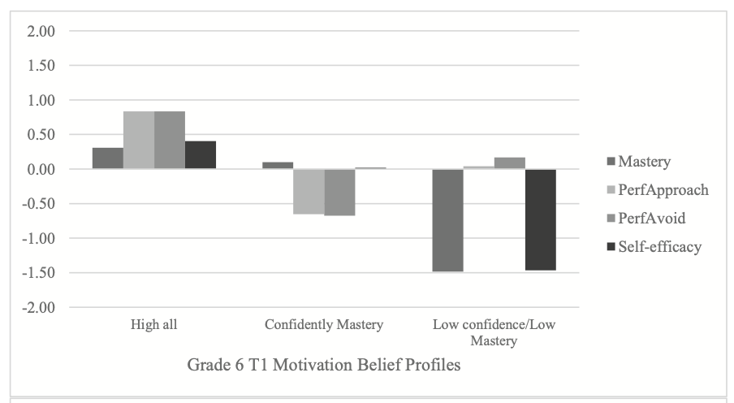

Motivation belief profiles in science: Links to classroom goal structures and achievement

Using a person-centered approach, this study examined science motivation belief (achievement goals and self- efficacy) profiles among middle school students (N = 1443). Three profiles were identified across grades: con- fidently mastery, high all, and low confidence/low mastery. For grades 6 (n = 520) and 7 (n = 307), a fourth profile, indifferent, and for grade 8 (n = 613), two new profiles, low all and performance-driven, were identified at the end of the school year. Results from latent transition analyses showed relatively stable profile membership; 42–89% of students remained in the same profile between time points. Classroom goal structures predicted profile membership and were aligned to students’ personal goal endorsements. Evidence was also found for the asso- ciation between profile and science achievement. Confidently mastery students demonstrated the highest science achievement, whereas performance was lower for all other profiles, with low confidence/low mastery students generally demonstrating the lowest science achievement.